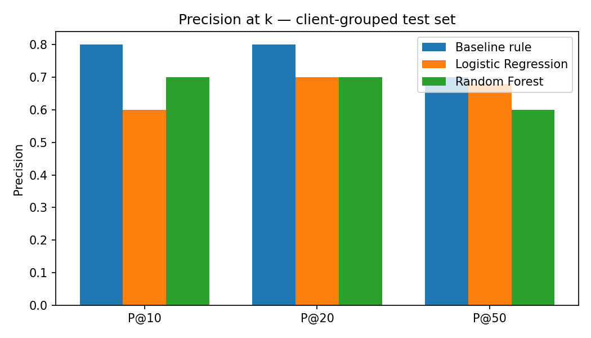
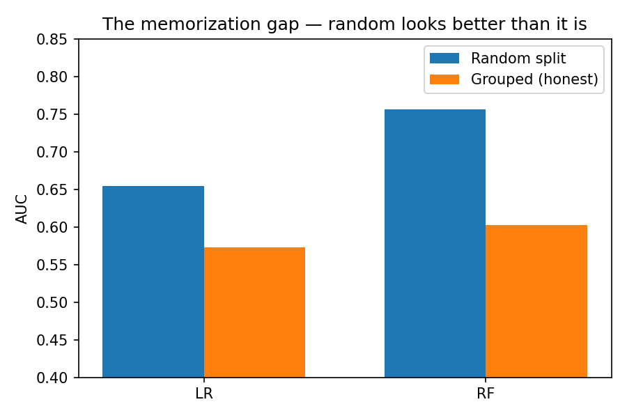
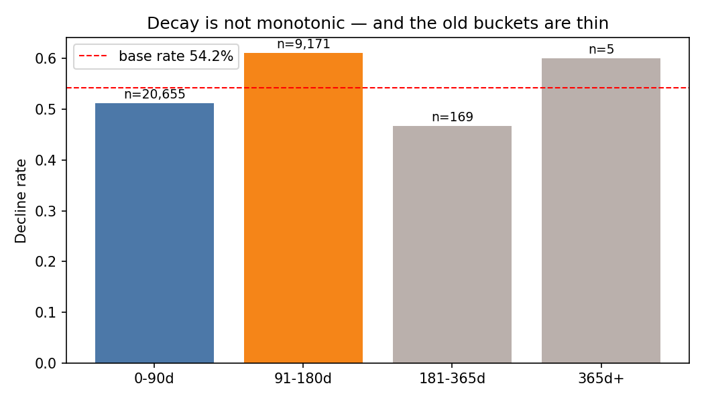
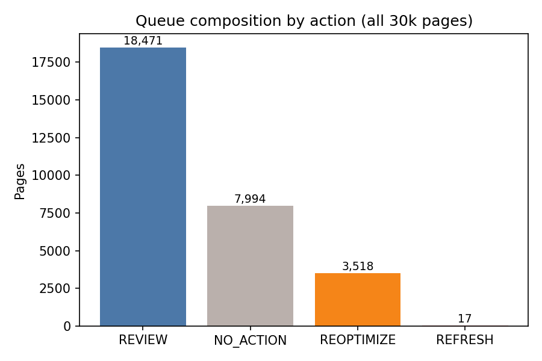

Research paper · FlyRank AI Internship, Machine Learning track · October 2026
Content teams managing tens of thousands of production pages cannot review everything by hand, so the question is whether observed search and behavior signals can rank pages by their odds of declining and turn weekly refresh work into a queue instead of a guess. I study this on the anonymized FlyRank ML internship dataset — 30,000 production pages across 32 clients, shipped as 90-day aggregates with a decline label computed from the last 30 days versus the previous 30. A rule baseline (stale ≥180 days and visible) is compared with logistic regression and a random forest under a client-grouped split, plus a deliberate leakage audit that scores a random split only to measure memorization. The random forest reaches precision@10 of 0.70 versus the baseline's 0.50 on the grouped test set, but its overall AUC is 0.603 — weak — and the random-split AUC of 0.757 collapses by 0.154 when whole clients are held out, a memorization gap this paper reports rather than hides. The output is therefore a decision-support artifact: a 30,000-page queue with reason codes, a human-review protocol, and monitoring triggers — not an autopilot, and not a claim that refreshing a page recovers traffic.
A content portfolio of 30,000 pages has a triage problem no analyst can solve by scrolling: which handful of pages deserve a human's attention this week? The industry reflex is a freshness rule — refresh whatever is old and still gets impressions. That rule is sensible and it is also incomplete: in this panel, 51.2% of pages updated in the last 90 days are declining anyway, so staleness alone is far from destiny.
This paper supports one decision: the order of a weekly review queue. A human opens the top of the queue, reads the evidence attached to each row, and decides. Nothing here edits, publishes, or deletes a page. That boundary is deliberate — the label measures association in a production panel, not the effect of an intervention.
The study uses the anonymized starter release of the FlyRank ML internship dataset (internally “v30k”): one row per content page, 30,000 pages, 32 clients, 45 shipped columns. All windows are relative — 90-day behavior aggregates, and a label that compares the last 30 days to the previous 30. Absolute dates were removed in anonymization, so no calendar range can or should be named.
trend_direction == "down" becomes a binary decline label. The base rate is 54.2% — slightly better than a coin flip is the bar any model must clear.
trend_direction, trend_pct — label-derived; never features.provider_used, model_used — production metadata about how content was made, not signals about how it performs.word_count is missing on 7,699 pages (25.7%) — feedly-type articles carry no keyword data at all. avg_position is 0 on 1,205 pages, which the data dictionary defines as no data, not rank zero; a has_position flag models this instead of reading 0 as a literal position.
| Archetype | Pages | Decline rate |
|---|---|---|
| Keyword article | 27,207 | 56.1% |
| Feedly article (no keyword data) | 2,096 | 28.7% |
| Comparison article | 697 | 57.2% |
Assumptions. Recent aggregates carry signal about near-term direction; pages are comparable across clients once client identity is held out of evaluation; and the honest unit of generalization is a client, not a page.
Features (12). Ten 90-day aggregates (impressions, clicks, sessions, engaged sessions, average position, CTR, engagement rate, content age, days since last update, word count) plus the two missingness flags. Nothing label-derived enters the feature set.
Baseline. The stale_visible rule from the baseline notebook: stale ≥180 days and ≥500 impressions, ranked by impressions. It is the comparison column in every table — a model that cannot beat a rule the team could have written on a whiteboard does not earn a queue.
Models. Logistic regression on standardized features, and a random forest (200 trees, depth 10). Every seed is fixed at 42.
Validation design. A client-grouped 80/20 split: the test set is 6,163 pages belonging to 7 clients the models never saw in training. Metrics are precision@10/20/50 (the queue metric), ROC AUC, and F1. A second, random split is scored for one purpose only — to measure how much client memorization inflates the optimistic number.
Leakage checks. The validation audit notebook verified: no label columns or target encodings in features; no cross-row aggregates computed with label access; feature window overlaps the label window by 30 days (disclosed as low severity — behavior in month three partially contains the trend measured in month three); and the random-vs-grouped AUC gap quantifies client memorization directly.
| Method | P@10 | P@20 | P@50 | F1 | AUC |
|---|---|---|---|---|---|
| Baseline (rule) | 0.50 | 0.45 | 0.62 | — | — |
| Logistic regression | 0.60 | 0.70 | 0.68 | 0.644 | 0.573 |
| Random forest | 0.70 | 0.70 | 0.60 | 0.621 | 0.603 |
Client-grouped test set, 6,163 pages from 7 unseen clients. Base rate on this split: 51.1%.

The number that changes how everything else is read: on a random split the forest scores AUC 0.757; on the grouped split it scores 0.603. The 0.154 collapse is client memorization — the forest was partly recognizing clients from their traffic signatures rather than learning decline itself. The grouped numbers are the only ones reported as results.

Footnote on baseline stability. The baseline's score is a step function with thousands of tied rows; top-k selection among ties depends on numpy's sort internals, and P@10 was observed between 0.50 and 0.80 across environments. The values above match the canonical modeling receipts; the instability itself is listed under limitations.

The deployed artifact of this paper is a weekly queue: all 30,000 pages ranked by the forest's decline probability, each row stamped with a reason code a human can check in two minutes. The model sets priority; the rule sets what kind of look a page needs.
| Reason code | Action | Pages | Rule |
|---|---|---|---|
insufficient_signal | NO_ACTION | 7,994 | <100 impressions — too little traffic to separate decline from noise |
stale_visible | REFRESH | 17 | stale ≥180d and impressions ≥500 — the baseline rule itself |
high_traffic_weak_position | REOPTIMIZE | 3,518 | ≥1,000 impressions and average position ≥20 — title/description work first |
moderate_traffic_overlap | REVIEW | 18,471 | everything else — model unsure, a human decides |

work/notebooks/capstone.ipynb (the runnable twin of this page).Built on the FlyRank ML Internship dataset — anonymized production search data released for this program. The data's realness is the point: 30,000 live pages, not a toy set.
Thanks to the FlyRank internship program for the data, the task ladder, and the review process that insisted on baselines, grouped validation, and honest claims at every step.
This work was completed as educational coursework through the FlyRank AI Internship (Machine Learning track, July 2026 cohort). It is not employment, and the views are the author's own.